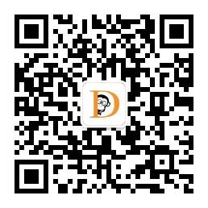

LumLum

数据分析与开发
数据与算法之美
大数据与机器学习文摘
数据猿
大数据前沿
小詹学Python
「小詹学Python」小詹是一名双一流高校在读研究生,专研c++,python,主要研究 图像处理、计算机视觉和机器学习相关知识,公号定期带你打卡刷leetcode,锻炼 编程能力。期待你的关注,和小詹一起学习进步！
Python爬虫与数据挖掘
人生苦短,我用Python。该公众号专注于分享Python网络爬虫、数据挖掘、数据 分析、数据处理、数据可视化、自动化测试、运维、大数据、人工智能、云计 算、机器学习等工具资源、热点资讯、相关技术文章、学习视频和学习资料等, 期待您的加入~~~
Python数据之道
秉承“让数据更有价值”的理念,分享数据分析,挖掘,可视化,机器学习,深度学习等 相关内容。 "Making Data Awesome",本公号源于数据分析,但不止于技术分享, 同时希望能畅聊职场、品阅群书、阔谈人生。
Python数据科学
以Python为核心语言,专攻于「数据科学」领域,文章涵盖数据分析,数据挖掘,机 器学习等干货内容,分享大量数据挖掘实战项目分析和讲解,以及海量的学习资源。
极简XksA
分享Python爬虫、数据分析可视化学习笔记,笔者目标数据挖掘,人工智能,快来和 X先生一起学Python吧。
Python与数据分析
程序员数学之美
程序员数学学习,锻炼数学逻辑思维。包含高等数学、线性代数、概率论与数理统 计、离散数学、数值分析等课程学习知识。
人工智能与大数据技术

分享AI人工智能、机器学习、深度学习、数据科学、大数据技术、大数据分析、云 计算云服务、物联网等前沿技术的实战技巧及学习经验。
数据科学俱乐部
优达学城Udacity
优达学城Udacity由谷歌无人车之父Sebastian Thrun创立的硅谷在线教育平台,与 Google、Facebook、IBM等打造人工智能、数据分析等前沿技术课程,通过实战 项目、专业辅导助你习得行业认可技术,实现职业理想。
超级数学建模
超级数学建模,分享有用的数学知识、有趣的数学故事、传奇的数学人物。我们传 播数学文化,为你激发学习数学的兴趣,培养数学逻辑思维。该平台由多名数学博士 维护,敬请关注！
数据科学俱乐部
量化投资与机器学习
公众号主要介绍关于量化投资和机器学习的知识和应用。通过研报,论坛,博客,程序 等途径全面的为大家带来知识食粮。版块语言分为：Python、Matlab、R,涉及领域 有：量化投资、机器学习、深度学习、综合应用、干货分享等。
挖地兔
Tushare金融大数据开放社区,为用户提供数据全流程服务,打开量化金融的第一扇大门。
R语言中文社区
怪兽学堂

带你零基础了解、认识、学习、玩转python,循序渐进学Python！欢迎广大爱好AI 机器学习与大数据分析的朋友关注我们,共同进步。
中国Hadoop技术及应用推广联盟,是在上海市政府经委和产业院的支持下,由星环 科技牵头,相关企、事业单位、机构共同发起,以自愿方式组成的全国性非营利性的 社会组织。每天发布最新的Hadoop应用案例和文章,定期举办技术会议和培训,欢 迎关注。
大数据D1net隶属于企业网D1Net,提供大数据存储、大数据分析、大数据挖掘等有关 大数据的最新技术和资讯。
知名的大数据技术分享公众号。不定期推送一篇关于但不限于Spark、Hadoop、Flink、 Kafka等大数据技术相关博文、会议、PPT等。大数据技术博客：博客： https://www.iteblog.com,Goo,Google\百度搜索 过往记忆。
腾讯大数据团队官方公众号,关注大数据平台构建、数据挖掘、数据应用等。信息共 享,促进行业交流。
专注大数据和云计算技术,坚持原创,欢迎和各位业界朋友相互交流和学习。 我们 坚持：有深度,技术追根溯源；有态度,无关乎对错。